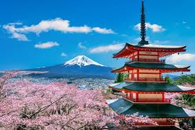
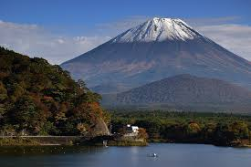
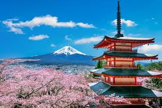
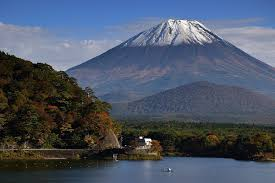
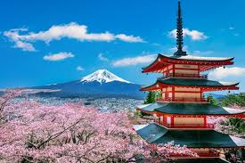
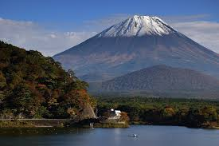

Galeria de Imagens do Japão
 



×

O Japão é um país-arquipélago formado por milhares de ilhas e localizado na área de maior instabilidade geológica do planeta, conhecida como Círculo de Fogo do Pacífico.

